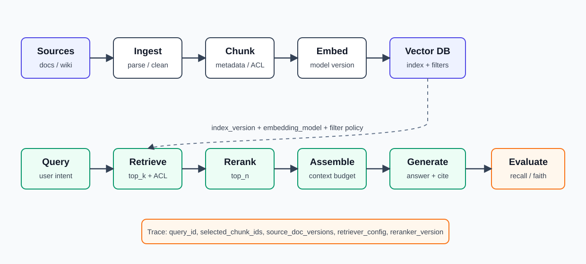
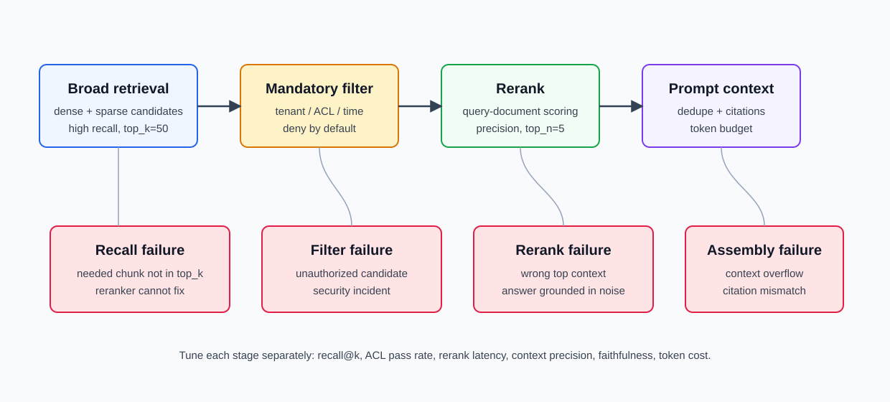

16장. RAG infrastructure: retrieval, vector DB, reranker를 운영 관점에서 보기¶
15장에서는 release gate가 model, prompt, runtime, benchmark, canary를 함께 봐야 한다는 점을 다뤘다. 이제 LLM application에서 가장 흔한 production 구조인 RAG로 들어간다.
RAG는 자주 "vector DB를 붙이면 된다"로 설명된다. 하지만 production에서는 vector DB보다 더 큰 질문이 있다.
사용자가 받은 답변이 어떤 문서 version, 어떤 chunking, 어떤 embedding model, 어떤 retrieval 설정, 어떤 reranker, 어떤 permission filter를 거쳐 만들어졌는지 설명할 수 있는가?
이 질문에 답하지 못하면 RAG는 지식 보강 장치가 아니라 추적 불가능한 release 위험이 된다.
이 장의 독자 질문은 다음과 같다.
RAG infrastructure는 retrieval 품질, latency, 비용, 권한, freshness를 운영하기 위해 어떤 구성요소를 versioning하고 관측해야 하는가?
핵심은 RAG pipeline을 serving path와 release artifact 양쪽으로 보는 것이다.
RAG는 retrieval pipeline이지 vector DB가 아니다¶
RAG request는 보통 다음 단계를 지난다.
- Source document를 수집한다.
- 문서를 정제하고 chunk로 나눈다.
- chunk에 metadata와 permission 정보를 붙인다.
- embedding을 만들고 index에 넣는다.
- query를 embedding 또는 lexical query로 변환한다.
- vector search, keyword search, filter search로 candidate를 찾는다.
- reranker가 candidate 순서를 다시 매긴다.
- prompt assembly가 context를 모델 입력에 넣는다.
- generator가 답변과 citation을 만든다.
- evaluator가 retrieval과 answer 품질을 기록한다.
이 중 하나만 바뀌어도 사용자가 받는 답변은 바뀐다. 따라서 RAG release는 model release와 비슷하게 다뤄야 한다.

운영 단위는 chunk다¶
Model serving의 운영 단위가 token shape였다면 RAG의 운영 단위는 chunk다. Chunk는 LLM에 들어가는 지식 단위이자 vector DB에 저장되는 검색 단위다.
| 결정 | 운영 영향 |
|---|---|
| Chunk size | recall, precision, embedding cost, context token cost |
| Chunk overlap | 누락 감소, 중복 증가, index size 증가 |
| Splitter | heading, paragraph, sentence, semantic boundary 유지 여부 |
| Metadata | filter, permission, citation, freshness 추적 |
| Chunk ID | update/delete/deduplication의 기준 |
| Parent document link | citation과 원문 검증 경로 |
LlamaIndex 문서는 document가 chunk로 나뉘고 metadata와 relationship을 추적하는 Node object로 파싱된다고 설명한다. 이 관점은 production RAG에서 중요하다. "문서를 넣었다"가 아니라 "어떤 node들이 어떤 metadata를 갖고 index에 들어갔는가"를 알아야 한다.
Chunk에는 최소 다음 metadata를 붙인다.
| Metadata | 이유 |
|---|---|
doc_id |
원문 문서 추적 |
chunk_id |
update/delete/deduplication |
source_uri |
citation과 감사 |
source_version |
문서 변경 추적 |
chunker_version |
chunking 변경 회귀 분석 |
embedding_model |
vector 호환성 확인 |
tenant_id |
multi-tenant 격리 |
acl_hash 또는 permission_group |
권한 필터 |
created_at, updated_at, expires_at |
freshness와 stale data 관리 |
content_hash |
중복 제거와 재색인 필요 여부 |
chunk_id를 매번 랜덤으로 만들면 incremental update가 어려워진다. 문서 경로, heading path, offset, content hash 등을 조합해 안정적인 ID를 만든다.
Ingestion은 batch job이 아니라 data pipeline이다¶
RAG ingestion은 단순 ETL이 아니다. Search 품질과 보안이 ingestion에서 결정된다.
| 단계 | 실패하면 생기는 문제 |
|---|---|
| Connector | 일부 문서 누락, 중복 수집 |
| Parser | 표, 코드, PDF layout 손실 |
| Normalizer | HTML noise, footer, navigation text 섞임 |
| Chunker | 근거 문장이 chunk 경계에서 잘림 |
| Metadata extractor | 권한, 날짜, 문서 유형 누락 |
| Embedder | 모델 변경으로 vector space가 달라짐 |
| Upsert/delete | stale chunk가 계속 검색됨 |
| Index build | recall/latency trade-off 변화 |
Ingestion pipeline은 다음 metric을 가져야 한다.
| Metric | 질문 |
|---|---|
| documents scanned | source에서 몇 개를 봤는가 |
| documents changed | 새로 색인할 필요가 있는가 |
| chunks produced | chunk 수가 갑자기 늘거나 줄었는가 |
| embedding tokens | embedding 비용이 얼마나 드는가 |
| embedding latency/error | provider 또는 local embedder가 병목인가 |
| upsert/delete count | index가 source와 동기화되는가 |
| stale chunk count | 삭제/만료된 chunk가 남아 있는가 |
| permission missing count | ACL 없는 chunk가 생겼는가 |
Source system이 바뀌면 RAG 품질도 바뀐다. 따라서 ingestion run에는 source_snapshot_id, connector_version, parser_version, chunker_version, embedding_model, index_name을 남긴다.
Embedding model은 index schema의 일부다¶
OpenAI embedding 문서는 embedding을 floating point vector라고 설명하고, 벡터 간 거리가 관련성을 나타낸다고 설명한다. 이 말은 embedding model이 바뀌면 vector space 자체가 바뀐다는 뜻이다.
Embedding model 변경은 application code 변경보다 위험할 수 있다.
| 변경 | 필요한 작업 |
|---|---|
| embedding model 변경 | 전체 재색인 또는 dual index |
| embedding dimension 변경 | vector DB schema 변경 |
| distance metric 변경 | index 설정과 score 해석 변경 |
| multilingual model 변경 | 언어별 retrieval eval |
| embedding input normalization 변경 | 기존 score threshold 재검토 |
운영에서 피해야 할 실수는 새 embedding으로 query를 만들고 old embedding으로 만들어진 index를 검색하는 것이다. 검색은 동작할 수 있지만 점수와 ranking이 신뢰할 수 없어진다.
따라서 query path와 index path 모두에 다음 label을 붙인다.
embedding_model
embedding_dimension
embedding_normalization
distance_metric
index_version
Vector DB 선택은 "빠른가"보다 "운영할 수 있는가"가 먼저다¶
Vector DB는 비슷해 보이지만 운영 특성이 다르다. 선택 기준은 다음이다.
| 기준 | 확인할 질문 |
|---|---|
| Index type | HNSW, IVF, DiskANN, flat search 중 무엇을 쓰는가 |
| Metric | cosine, inner product, L2 중 무엇을 쓰는가 |
| Filter | tenant, permission, time range filter가 빠른가 |
| Update/delete | 문서 변경과 삭제를 안전하게 반영할 수 있는가 |
| Consistency | 쓰기 직후 읽기, replica lag를 어떻게 다루는가 |
| Multi-tenancy | collection, namespace, payload filter 중 어떤 격리 모델인가 |
| Backup/restore | index와 metadata를 복구할 수 있는가 |
| Observability | query latency, recall proxy, index size, compaction을 볼 수 있는가 |
| Cost | vector count, dimension, replica, storage, read unit 비용 |
Milvus 문서는 floating point vector에 대해 L2, inner product, cosine metric과 FLAT, IVF, HNSW, DISKANN 같은 index type을 지원한다고 설명한다. Qdrant 문서는 payload와 id 조건으로 검색/조회 조건을 줄 수 있고, 자주 필터링하는 field에는 payload index를 만들 것을 권장한다.
이 두 문서가 말해 주는 운영 교훈은 분명하다. Vector DB는 "벡터만 저장하는 곳"이 아니라 search index, scalar metadata index, filter execution, consistency, update/delete semantics를 함께 운영하는 database다.
Filter는 보안 경계다¶
RAG에서 metadata filter는 relevance 기능이기도 하지만 보안 경계이기도 하다. 특히 enterprise RAG에서는 사용자가 볼 수 없는 문서가 retrieval candidate에 들어오면 안 된다.
권한 필터는 prompt에서 처리하지 않는다.
나쁜 흐름:
retrieve all similar chunks -> prompt says "ignore unauthorized documents"
좋은 흐름:
apply tenant/ACL filter -> retrieve allowed chunks only -> rerank -> prompt assembly
Filter 설계에서 중요한 점은 다음이다.
| 항목 | 설명 |
|---|---|
| Pre-filter | vector search 전에 tenant/ACL 후보를 제한 |
| Post-filter | 검색 후 결과에서 제외, recall과 latency가 흔들릴 수 있음 |
| ACL freshness | 권한 변경이 index에 반영되는 지연 |
| Deny-by-default | metadata 누락 chunk는 검색 제외 |
| Audit | 어떤 filter가 적용됐는지 trace에 기록 |
ACL이 복잡하면 permission_group 또는 acl_hash를 chunk metadata에 넣고 query 시점에 허용 group으로 filter한다. 다만 group 수가 많으면 filter cardinality와 index 성능을 함께 확인해야 한다.
Hybrid retrieval은 dense와 sparse의 약점을 보완한다¶
Dense retrieval은 의미가 비슷한 문서를 잘 찾는다. 하지만 고유명사, 제품 코드, 에러 코드, 버전 번호, 짧은 키워드에는 lexical search가 더 강할 때가 많다.
| Retrieval type | 강점 | 약점 |
|---|---|---|
| Dense vector | 의미 유사성, paraphrase | 고유명사/코드/숫자 약함 |
| Sparse/BM25 | 정확한 단어, identifier | 표현이 다른 문장 약함 |
| Metadata filter | 권한, 날짜, tenant | relevance 자체는 아님 |
| Hybrid | dense와 sparse 보완 | score fusion과 tuning 필요 |
Pinecone의 hybrid search 설명은 dense retrieval이 fine-tuning된 domain에서는 강하지만 out-of-domain에서는 traditional search가 장점을 가질 수 있고, dense와 sparse를 함께 쓰는 접근을 설명한다.
운영 관점에서 hybrid retrieval은 다음 값을 release artifact로 남긴다.
| 설정 | 예 |
|---|---|
| dense model | text-embedding-3-large, local embedding model |
| sparse method | BM25, SPLADE, keyword index |
| fusion method | weighted sum, RRF, vendor-specific alpha |
| top_k before rerank | 20, 50, 100 |
| top_n after rerank | 3, 5, 8 |
| language policy | Korean/English/multilingual split |
Hybrid 설정을 바꾸면 answer quality뿐 아니라 latency와 token cost도 바뀐다. top_k를 크게 잡으면 recall은 올라갈 수 있지만 reranker 비용과 prompt assembly 후보가 늘어난다.
Reranker는 recall을 precision으로 바꾸는 단계다¶
Retriever는 넓게 후보를 찾고, reranker는 그 후보를 더 정확한 순서로 좁힌다. Cohere 문서는 semantic, lexical 등 여러 search system에서 온 결과가 최적으로 정렬되어 있지 않을 수 있고, rerank가 query, documents, top_n을 받아 상위 문서를 고르는 흐름을 설명한다. Sentence Transformers 문서는 reranker가 보통 query와 answer text pair를 받아 점수를 내는 CrossEncoder 모델이라고 설명한다.
운영에서 reranker는 다음 trade-off를 만든다.
| 장점 | 비용 |
|---|---|
| 상위 context 품질 개선 | rerank latency 추가 |
| dense/sparse 결과 fusion 보정 | reranker model 비용 |
| semi-structured data ranking | serialization 품질 의존 |
| domain-specific ranking 가능 | eval dataset과 tuning 필요 |
Reranker를 넣을 때는 다음 metric을 본다.
| Metric | 질문 |
|---|---|
| rerank input count | reranker에 몇 개 후보를 넣는가 |
| rerank latency p95 | user-facing latency에 얼마나 더해지는가 |
| top_n selected | prompt에 몇 개 chunk가 들어가는가 |
| context precision | 상위 chunk가 질문에 관련 있는가 |
| answer faithfulness | 답변이 context에 근거하는가 |
| no-answer rate | 근거 부족을 제대로 감지하는가 |
Reranker가 항상 답은 아니다. top_k가 작으면 reranker가 좋은 문서를 살릴 수 없다. Retriever recall이 먼저다. Reranker는 "못 찾은 문서"를 만들어 내지 못한다.

Prompt assembly는 retrieval 결과를 제품 동작으로 바꾼다¶
좋은 chunk를 찾았어도 prompt assembly가 나쁘면 답변은 나빠진다.
Prompt assembly는 다음을 결정한다.
| 결정 | 영향 |
|---|---|
| Context order | 모델이 어떤 근거를 먼저 보는가 |
| Deduplication | 같은 문장이 반복되어 context를 낭비하지 않는가 |
| Citation format | 답변 근거를 추적할 수 있는가 |
| Context budget | retrieval context와 user query, conversation history의 token 배분 |
| Conflict handling | 서로 다른 문서가 충돌할 때 어떻게 답하는가 |
| No-answer policy | 근거가 부족하면 모른다고 말하는가 |
RAG에서 hallucination을 줄이는 가장 현실적인 방법은 prompt에 "정확히 답하라"를 추가하는 것이 아니다. 근거 context의 품질을 높이고, context 밖 내용을 말하지 않는 정책을 명확히 하고, citation을 강제하고, no-answer case를 eval에 넣는 것이다.
RAG evaluation은 retrieval과 answer를 따로 본다¶
15장에서 RAG eval은 retrieval과 generation을 분리해야 한다고 했다. 16장에서는 그 값을 운영 metric으로 사용한다.
Ragas 문서는 RAG에 대해 context precision, context recall, noise sensitivity, response relevancy, faithfulness 같은 metric을 제공한다고 설명한다. 이 이름들은 production dashboard에서도 유용한 관측 축이다.
| Eval axis | 질문 |
|---|---|
| Retrieval recall | 필요한 근거가 후보 안에 들어왔는가 |
| Context precision | prompt에 들어간 context가 질문과 관련 있는가 |
| Faithfulness | 답변이 context에 근거하는가 |
| Answer correctness | 최종 답변이 기대 행동과 맞는가 |
| Citation accuracy | citation이 실제 근거 위치를 가리키는가 |
| Freshness | 최신 문서를 검색했는가 |
| Authorization | 허용되지 않은 문서가 섞이지 않았는가 |
RAG eval dataset은 일반 QA dataset보다 더 많은 정보를 가져야 한다.
| 필드 | 이유 |
|---|---|
question |
사용자 query |
expected_answer |
답변 평가 |
required_doc_ids |
retrieval recall 평가 |
forbidden_doc_ids |
권한/오염 평가 |
tenant_or_role |
ACL filter 평가 |
time_context |
freshness 평가 |
answer_policy |
no-answer, citation, style 규칙 |
이 dataset 없이 embedding model이나 chunking을 바꾸면, "답변이 좋아진 것 같다"는 느낌만 남는다.
RAG observability는 trace에 retrieval evidence를 남긴다¶
14장의 trace 구조에 RAG span을 추가한다.
| Span | 남길 정보 |
|---|---|
rag.ingest |
source snapshot, parser, chunker, embedding model |
rag.retrieve |
query, index version, filter, top_k, latency |
rag.rerank |
reranker version, input count, top_n, latency |
rag.assemble |
selected chunk IDs, token budget, citation map |
llm.generate |
model version, prompt version, output token count |
rag.evaluate |
recall, precision, faithfulness, user feedback |
특히 trace에는 다음 정보를 반드시 남긴다.
query_id
index_version
embedding_model
retriever_config_version
reranker_version
selected_chunk_ids
source_doc_versions
permission_filter
이 값이 있어야 사용자가 "답이 틀렸다"고 말했을 때 같은 retrieval 결과를 재현할 수 있다.
Freshness와 deletion은 production RAG의 핵심이다¶
RAG system은 오래된 문서를 잘 검색할수록 위험해진다. 문서가 삭제되거나 권한이 바뀌었는데 index에는 남아 있으면 답변이 틀리거나 보안 사고가 난다.
| 문제 | 대응 |
|---|---|
| Source document update | content hash 비교 후 affected chunk 재색인 |
| Source document delete | tombstone 이벤트와 index delete |
| Permission change | ACL metadata update 또는 재색인 |
| Time-sensitive policy | expires_at filter와 freshness scoring |
| Connector lag | ingestion lag metric과 alert |
| Partial failure | run manifest와 retry queue |
Deletion은 best-effort로 두면 안 된다. Delete event가 실패하면 stale chunk가 남는다. 최소한 tombstone log를 두고, index와 source snapshot을 주기적으로 reconcile한다.
Release record에 RAG를 포함한다¶
15장의 release record에 RAG 항목을 추가한다.
| 항목 | 예 |
|---|---|
| Corpus snapshot | docs-2026-07-10T12:00Z |
| Parser version | pdf-parser-v3 |
| Chunker version | heading-sentence-v2 |
| Embedding model | text-embedding-3-large |
| Vector index | customer-help-v42 |
| Distance metric | cosine |
| Retriever config | hybrid alpha, top_k, filters |
| Reranker | model/version/top_n |
| Prompt template | rag-answer-v8 |
| Eval set | rag-golden-v5 |
| Rollback target | previous index/prompt/retriever config |
RAG rollback은 model rollback보다 복잡하다. Prompt만 되돌릴 수도 있고, retriever config만 되돌릴 수도 있으며, index를 previous snapshot으로 pin해야 할 수도 있다. 따라서 release record는 "무엇을 되돌릴 것인가"를 명시해야 한다.
Failure pattern¶
Vector DB score를 절대값으로 믿는다¶
Score는 embedding model, distance metric, normalization, index type에 따라 의미가 달라진다. Threshold는 release마다 eval로 보정해야 한다.
Chunk를 크게 만들면 항상 좋아진다고 생각한다¶
큰 chunk는 context를 더 많이 담지만 precision과 token cost를 망칠 수 있다. 작은 chunk는 정확하지만 근거가 잘릴 수 있다. Chunk size는 eval로 결정한다.
ACL을 prompt에서 처리한다¶
Prompt는 보안 경계가 아니다. 검색 후보 단계에서 권한 필터를 적용해야 한다.
Reranker를 넣고 recall 문제를 해결했다고 생각한다¶
Reranker는 후보를 재정렬할 뿐이다. Retriever가 필요한 문서를 후보에 넣지 못하면 reranker는 살릴 수 없다.
Index version 없이 답변을 디버깅한다¶
같은 질문이라도 index snapshot이 다르면 답변이 달라진다. Debug와 audit에는 index version이 필요하다.
실습: RAG release checklist 만들기¶
첫 RAG release checklist는 다음 질문으로 시작한다.
| 질문 | 기록값 |
|---|---|
| 어떤 corpus snapshot을 쓰는가 | source snapshot ID |
| 어떤 chunking 규칙인가 | chunker version, size, overlap |
| 어떤 embedding model인가 | model, dimension, metric |
| 어떤 vector DB/index인가 | collection, namespace, index type |
| 어떤 filter가 mandatory인가 | tenant, ACL, date |
| 어떤 retrieval 전략인가 | dense, sparse, hybrid, top_k |
| reranker를 쓰는가 | model, top_n, latency budget |
| prompt context budget은 얼마인가 | max context token |
| retrieval eval은 통과했는가 | recall, precision, faithfulness |
| rollback은 무엇을 되돌리는가 | index, prompt, retriever config |
이 표를 채우지 않은 RAG는 production release로 보기 어렵다.
정리¶
- RAG infrastructure는 vector DB 하나가 아니라 ingestion, chunking, embedding, index, filter, retrieval, rerank, prompt assembly, eval의 pipeline이다.
- Production RAG의 운영 단위는 chunk이며, chunk ID와 metadata가 update, citation, ACL, freshness를 결정한다.
- Embedding model, dimension, distance metric은 index schema의 일부이므로 변경 시 재색인과 eval이 필요하다.
- Vector DB는 vector index뿐 아니라 metadata filter, consistency, update/delete, backup, observability를 함께 봐야 한다.
- 권한 필터는 prompt가 아니라 retrieval 이전 또는 retrieval 단계에서 적용해야 한다.
- Hybrid retrieval은 dense semantic search와 sparse lexical search의 약점을 보완하지만 fusion과 top_k를 eval해야 한다.
- Reranker는 candidate precision을 높이지만 retrieval recall을 대신하지 못한다.
- RAG release record에는 corpus snapshot, chunker, embedding model, index version, retriever config, reranker, prompt, eval set이 들어가야 한다.
Source anchors¶
- LlamaIndex VectorStoreIndex: https://docs.llamaindex.ai/en/stable/module_guides/indexing/vector_store_index/
- OpenAI embeddings guide: https://platform.openai.com/docs/guides/embeddings
- Milvus vector index docs: https://milvus.io/docs/index-vector-fields.md
- Qdrant filtering docs: https://qdrant.tech/documentation/concepts/filtering/
- Pinecone hybrid search overview: https://www.pinecone.io/learn/hybrid-search-intro/
- Cohere reranking guide: https://docs.cohere.com/docs/reranking-with-cohere
- Sentence Transformers rerankers: https://www.sbert.net/examples/cross_encoder/training/rerankers/README.html
- Ragas available metrics: https://docs.ragas.io/en/stable/concepts/metrics/available_metrics/